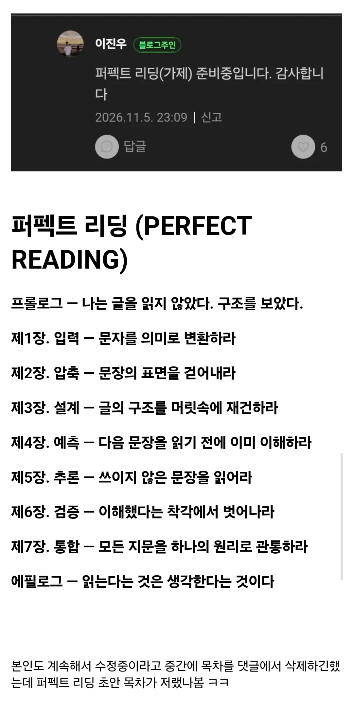

Perfect Leaving이 되버린..

Perfect Leaving이 되버린..
ㅇㅇ 프롤로그부터 바로 박아버림
너무나 전형적인 ai생성물이라 쇠맛이 여기까지남
뜬구름잡는소리 on
아 완벽히 이해했어 (착각임)
이미써져있는 글을 왜 예측하냐 종이랑 기싸움하게?ㅋㅋㅋ
난 줜나 똑똑하니까 다음에 뭐가 올지 예측이 된다
이윤규 변호사 공부법 책 내용에도 있는 방법이긴 함
소제목만 보고 세부내용 먼저 유추해본 다음에 능동적으로 읽으라고
일이관지하였으니 문도하였고 석사가의겠구먼
ㅋㅋㅋㅋㅋㅋㅋ 개잘돌리네
이런게 배운 드립
저거 글쓰고있을때 자신이 2주뒤 죽는다는 생각을 했을까.. 참.. ㅋㅋ..
책을 완독할 필요는 없다만 완독한 적 한번도 없다는 애가 저런 책을 쓰는 것도 웃기긴 하네
브레인 악셀 하트 브레이크
7등급
잘난척을 얼마나 하고싶었는건지 감도안온다.
오히려 뜻을 이해하려고 하지 말고 텍스트 그자체로 보라는 게 도움이 많이 됐었는데 난
문제를 푸는 방식에선 이게 도움이 됨
꼭 이해 안하고도 맞출 수 있음
근데 내 사고의 깊이나 폭을 위하는 평소 독서에서는 좀 그렇지?ㅋㅋ
이거 영어, 국어는 도움되는듯 나는 이방식대로 수학에서 써먹었다가 수학 좆망하고 재수함..ㅠㅠ
ㅋㅋㅋㅋㅋㅋㅋㅋ
난 무조건 이해해야 기억에 잘남던데 그냥 보면 집중망가짐
무협지에서 삼류비급 보고 각성한 캐릭터 같네
나도 언어시절 만점도 받아보고 수능도 두개 틀렸는데 100% 이해하고 못품 그냥 기계적으로 풀고 넘어가야함 철학이나 경제나 어려운 지문은 이해한다고 깝치면 오히려 풀기 어려움
리트나 요즘 수능은 안봐봐서 그거랑 안맞는 이야기 일수도 있음
목차에서부터 쇠맛 개오지네 진짜
저 새끼 얘기하는 꼴을 보면 어디서 연상기억법 줏어 듣고 거기에 꽂힌 거 같음
ai가 써준 거라 그런지 고득점 하려면 맞는 방법 같은데? ㅋㅋ
료이키 텐카이.. 브레인 아크세루!
나는 글을 읽지 않았다. 구조를 보았다. << 전형적인 not A but B 체. not only A but also B, A not B, not A but B 이런 방어형 부정문 존나 쓰임. + 지나친 추상화
AI한테 자기계발서적 목차 만들어줘 하면 나올법하네
ai 많이 써본 사람은 그냥 단번에 알아보겠네
근데 실제로 수능 국어나 영어문제 풀때 첫 문장 보고 자연스럽게 뒷내용 예상하면서 읽어나가긴함
AI한테 물어봐서 그런지 어느정도 일리는 있네
저런 방식으로 영어는 되긴하더라
나 영어 개못하는데 중요단 단어만 읽고 앞으로 일어날 전개가 다 생각나서
단어만 ㅈㄴ외우고 그랬음
항상 영어100점이였는데 현실 영어 개못했음 오픽도 그냥보니까 im2고
난 이진우 조금 믿었던게 고2때까지 2~3등급 나오다가 3학년부터 올1등급 나온 케이스라서(진짜뭐 패러글라이딩마냥 갑자기 그랬음)
나같은 케이스가 잇겟거니함
책도 AI로 썼구나 ㅋㅋㅋㅋ
아랫배에 기를 집중하고 읽어라 우주가 느껴진다
저샠기 국어 7등급이라 ㄹㅇ 개붕이들 대다수보다 독해력 어휘력 븅신인거 맞음..
진짜 어떻게 저런 버러지새끼가 세상에 태어났을까 싶음
캬
야. 저거 맹신하고 공부한 사람 있었으면.
생각만 해도 아찔하네
사기로 끝까지 갈 생각이었나봄
ai 말투
이게 뭔
병신 ㅋㅋㅋ
성공팔이 하려는 놈들의 전형적인 스텝이지 뭐 ㅋㅋ

진심 저게 먹힐거라 생각한 지능인가 ㅋㅋ
정작 본인은 책 안읽는다고 본인입으로 말했자나...
책 안읽는 사람이 뭔 읽는법을 책으로 쓰냐..?
언어 7따리가
딸깍
모순 그 자체 ㅋㅋ
공부법 책은 무슨 시험 만점이나 수석이 써도 아마추어가 쓴 수기에 불과함 근거도 희박하고 나한테 맞는단 보장이 없음
그냥 인지심리학이나 교육학 교수 박사들이 쓴 공부법 책 골라서 읽으면 됨
전형적인 AI식 목차구성 아니냐